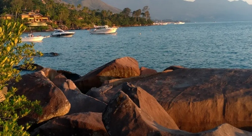
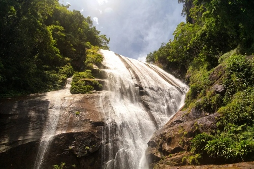
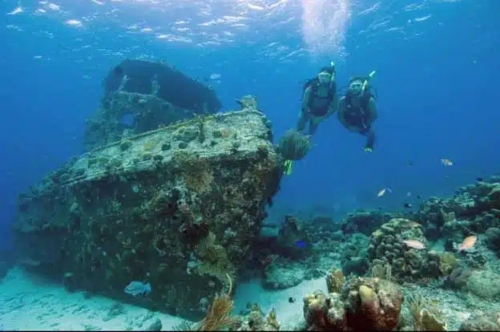
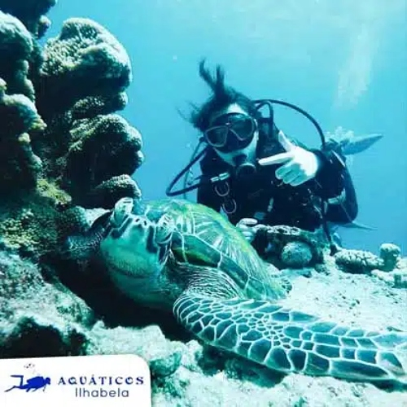
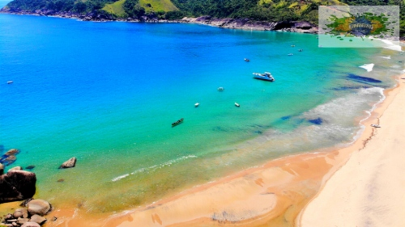

Ilhabela tem borrachudos devido à sua abundante rede hídrica, rica em córregos, rios e cachoeiras, que proporcionam o ambiente perfeito para a proliferação desses insetos.
O uso de repelentes é uma das formas mais eficazes de evitar as picadas de borrachudo. Procure por repelentes que tenham em sua composição substâncias ativas como DEET, Icaridina ou Citronela, que são eficazes contra esses insetos. Aplique o repelente principalmente nas áreas expostas da pele, como braços, pernas e pescoço.
Roupas de manga longa e calças compridas podem ser uma boa proteção contra as picadas de borrachudo, especialmente durante atividades ao ar livre em áreas onde esses insetos são mais comuns. Prefira roupas de tecidos mais fechados e de cores claras, que também ajudam a afastar outros insetos.
Ilhabela tem muitas praias magníficas para conhecer, por isso vamos listar algumas para vocês :
A Praia do Jabaquara em Ilhabela é uma das praias mais bonitas e preservadas da ilha, localizada no extremo norte, depois da Praia da Pacuíba. É conhecida pelas suas águas transparentes, larga faixa de areia clara e pela natureza exuberante que a cerca.
.jpg)
A Baía de Castelhanos, em Ilhabela, é uma praia paradisíaca conhecida pela sua beleza natural, com águas cristalinas que formam a silhueta de um coração quando vista do mirante. A praia é cercada por vegetação nativa da Mata Atlântica e é a maior da ilha, com cerca de 1,786 metros de extensão.
.jpg)
A Pedra do Sino em Ilhabela é uma atraçao natural e cultural, localizada na Praia de Garapocaia, também conhecida como Praia do Sino. A praia e as rochas são famosas por uma lenda indígena e pelo som metálico que as rochas emitem quando batidas, parecido com um sino.

A Praia da Feiticeira tem esse nome porque, segundo a lenda, uma antiga proprietária da fazenda fez fortuna com piratas contrabandistas e com comandantes de navios negreiros que, após 1850, com a proibição do tráfico de escravos africanos, utilizavam a Ilha como ponto preferido de entrada de escravos ilegais no Brasil.

A Trilha da Cachoeira do Gato faz parte do Parque Estadual de Ilhabela e começa no canto esquerdo da Praia de Castelhanos (de quem olha para o mar), conhecido como como Canto do Ribeirão ou Canto do Gato)
A trilha para a Cachoeira do Gato é bem sinalizada, possui pontes e corrimões, podendo ser feita por qualquer pessoa, sem grandes dificuldades. No início do percurso, você passará por casas da comunidade tradicional de Castelhanos, incluindo construções de pau a pique.

A Cachoeira do Paquetá ficou famosa depois que os moradores locais de Ilhabela começarem a postar fotos de lá com a hashtag #secretpoint. A partir daí, todos queriam conhecer e tirar sua foto na incrível cachoeira com borda infinita e vista para o mar.
.jpg)
Desvende mistérios submersos e explore naufrágios históricos em um mergulho em Ilhabela
Os naufrágios de Ilhabela são cenários de tirar o fôlego, repletos de vida marinha, corais e peixes que encontraram refúgio entre as estruturas submersas. Cada mergulho é uma viagem no tempo, proporcionando momentos de pura adrenalina e contemplação.


Um dos roteiros mais procurados pelos turistas é a Praia do Bonete em Ilhabela. Considerada pelo respeitado jornal britânico “The Guardian” uma das dez praias mais bonitas do Brasil, esse refúgio paradisíaco tem um clima único. Localizada no extremo sul de Ilhabela, esta praia é acessível apenas por uma trilha na mata ou pelo mar, e o Superboat da Maremar Turismo é a maneira mais segura e confortável para chegar até lá.
O passeio de barco em Ilhabela para a praia do Bonete é feito a bordo de um superboat, uma embarcação com 600 HP de potência, de extrema segurança e agilidade. Isso garante que você aproveite ao máximo sua experiência, com conforto e tranquilidade.

.jpg)